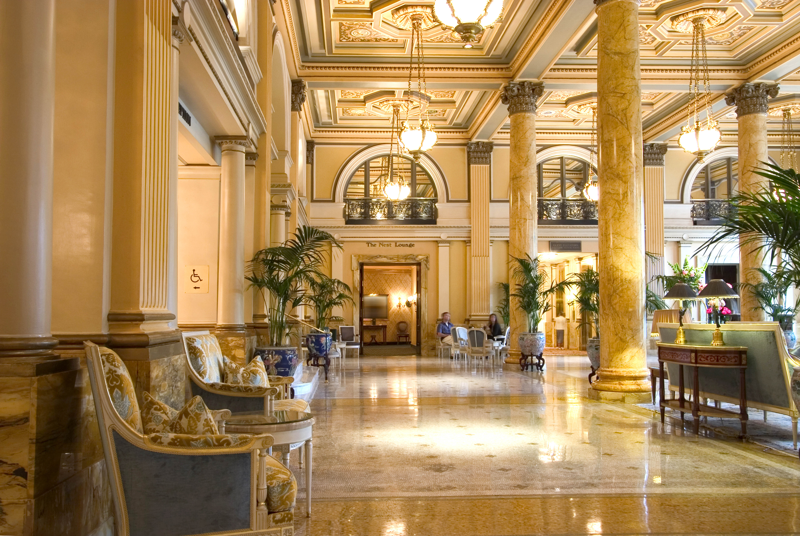
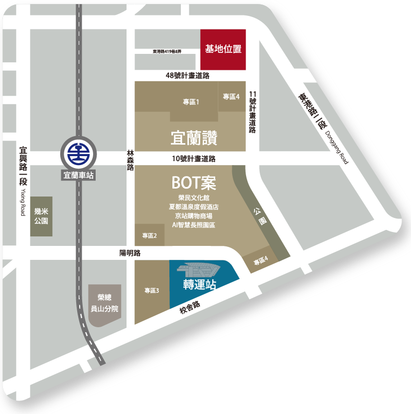

宜蘭東區 地王首席
百億宜蘭讚BOT
未來新都心特區
夏都集團百億建設落地，15000坪都心造鎮，宜蘭東區翻轉崛起！卡位蘭陽新核心，預約繁榮都會新紀元。

夏都國際溫泉酒店（預計2029年完工）
175間奢華客房，融合溫泉療癒與頂級旅宿，匯聚國際商務與渡假風華，定義宜蘭高端旅遊新典範。

夏都集團百億建設落地，15000坪都心造鎮，宜蘭東區翻轉崛起！卡位蘭陽新核心，預約繁榮都會新紀元。
175間奢華客房，融合溫泉療癒與頂級旅宿，匯聚國際商務與渡假風華，定義宜蘭高端旅遊新典範。
蘭陽大都會核心，唯一精品級地段。台鐵高架化、高鐵、陽大2期…建設持續升級，「皇程首賦」一站匯集。